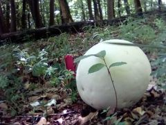
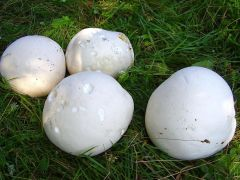
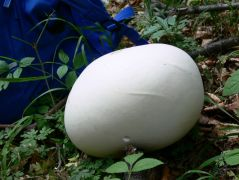

Félig meddig ehető
Félig meddig ehető Félig meddig ehető
Termőtest: 10-50 (100) cm átmérőjű, gömbölyded vagy lapított, alja kissé összehúzott, ráncolt felületű, gyakran karógyökérszerű micéliummal. Külső burka csaknem sima, bőrszerű, fehéres, krémszínű, igen törékeny.
Termőrész: a termőtest belsejét tölti ki, belső burka éréskor a külsővel együtt szélesedik és szabaddá válik a szivacsos állományú termőrész.
Hús: fiatalon rugalmas, fehér színű, később szivacsos, nedvesen pépszerű, zöldessárga, éréskor barna színű, csak idős állapotban kellemetlen szagú és ízű.
Előfordulás: júniustól októberig, erdőn-mezőn, nitrogénben gazdag talajon, csalánosokban, szőlőkben, trágyázott helyeken növő, nem ritka faj.
Étkezési érték: fiatalon, amíg húsa fehér, ehető. (!!!)
Megjegyzés: legnagyobb méretű gombafajunk, 10 kg feletti tömeget is elérhet. Más gombafajjal nem téveszthető össze.
  